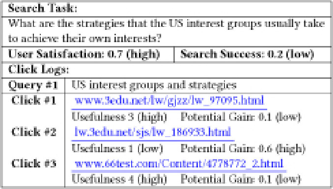

This is a HTML copy of https://doi.org/10.1145/3178876.3186065 originally published by ACM, redistributed under the terms of Creative Commons Attribution 4.0 (CC BY 4.0). The modifications from the original are solely to improve HTML accessability, compatibility, augmenting HTML metadata and avoiding ACM trademark. To reference this HTML version, use:
Permalink: https://w3id.org/oa/10.1145/3178876.3186065
DOI: https://doi.org/10.1145/3178876.3186065
WWW '18: Proceedings of The Web Conference 2018, Lyon,
France, April 2018
User satisfaction has been paid much attention to in recent Web search evaluation studies. Although satisfaction is often considered as an important symbol of search success, it doesn't guarantee success in many cases, especially for complex search task scenarios. In this study, we investigate the differences between user satisfaction and search success, and try to adopt the findings to predict search success in complex search tasks. To achieve these research goals, we conduct a laboratory study in which search success and user satisfaction are annotated by domain expert assessors and search users, respectively. We find that both “Satisfaction with Failure” and “Unsatisfied Success” cases happen in these search tasks and together they account for as many as 40.3% of all search sessions. The factors (e.g. document readability and credibility) that lead to the inconsistency of search success and user satisfaction are also investigated and adopted to predict whether one search task is successful. Experimental results show that our proposed prediction method is effective in predicting search success.
CCS Concepts: • Information systems → Retrieval effectiveness; Desktop search;
ACM Reference
Format:
Mengyang Liu, Yiqun Liu, Jiaxin Mao, Cheng Luo, Min
Zhang, and Shaoping Ma. 2018. “Satisfaction with Failure”
or “Unsatisfied Success”: Investigating the Relationship
between Search Success and User Satisfaction. In WWW
2018: The 2018 Web Conference, April 23–27,
2018, Lyon, France. ACM, New York, NY, USA
11 Pages. https://doi.org/10.1145/3178876.3186065
Search evaluation is one of the central concerns in information retrieval (IR) studies. Besides the traditional system-oriented evaluation methodology, i.e. Cranfield paradigm, much attention has been paid to user-oriented evaluation methods. Researchers are trying to model users’ subjective feelings with various document features (relevance, usefulness, etc.) [12, 23] or users’ implicit feedback signals (click, hover, scroll, etc.) [5, 7, 8]. In this line of research, many existing studies focused on the estimation of two important variables: user satisfaction and search success.
User satisfaction measures users’ subjective feelings about their interactions with the system. It can be defined as the fulfillment of a specified information requirement [16]. Search success measures the objective outcome of a search process [1, 25]. Different from user satisfaction, it is usually measured by predefined criteria [10] or assessed by domain experts [19]. Search success and user satisfaction are two variables that are both correlated with search performance but characterize different perspectives.
|  |
For search tasks with information needs which are simple and clear, search success is usually consistent with user satisfaction. That is to say, when a user is satisfied by enough useful information (that he/she believes), the search process can usually be regarded as a successful search as well. However, for search tasks with complex information needs, e.g. exploratory search, it is sometimes difficult for users to determine whether they have gained enough credible information to fulfill their information needs. In these scenarios, user satisfaction might be different from search success.
Table 1 presents an example from our experimental studies (See Section 3.1 for more details). The user issued a query and sequentially viewed three landing pages. After manually checking the clicked documents, we find that the first and the third pages contain limited helpful information. However, the user considered that these two results are useful because they contained some unreliable content (some outdated personal opinions) seemingly to be able to answer the question. Meanwhile, the user regarded a document (the 2nd clicked document) that actually contains useful information as useless since the useful content is a bit far from the beginning of the Web page. From the searcher's point of view, he/she felt satisfied because he/she had found enough useful information in his/her opinion. However, he/she actually got very biased information and this task was not successful from a domain expert's point of view. In this example, we can see that user satisfaction may be different from search success because of content credibility or document readability.
The differences between user satisfaction and search success may lead to two scenarios: “satisfaction with failure” and “unsatisfied success”. The “unsatisfied success” scenario just hurts users’ subjective feelings while the “satisfaction with failure” scenario can be really harmful to users. In recent studies, Frances et al. [26] describe an accident in which a Chinese student unfortunately died because he was satisfied by a search result containing malicious information when he was searching for medical information. Therefore, besides bringing satisfaction to users, it is also very important to help them make a successful search, i.e. get sufficient correct information via search.
To achieve this goal, the first and necessary step should be an investigation into the relationship between user satisfaction and search success. In this study, we try to make the first step by answering these research questions:
To shed light on these research questions, we conducted a laboratory user study in which both subjective user feedbacks and objective judgments by domain experts are collected. With this constructed dataset1, we investigate the relationship between search success and user satisfaction. Especially, we try to identify the reasons behind the inconsistency of these two important variables. To the best of our knowledge, we are among the first to perform this kind of investigation. The major contributions of this study are three folds:
The remainder of this paper is organized as follows. Section 2 reviews existing studies related to this work. Section 3 describes the experimental user study and corresponding annotation processes. In Section 4, we present data analysis to answer RQ1 and RQ2. To answer RQ3, we propose success-oriented evaluation metrics in Section 5 and models for search success prediction in Section 6. Finally, we give our conclusions and future work in Section 7.
User satisfaction measures users’ subjective feelings about their interactions with the system, it can be understood as the fulfillment of a specified information requirement [16]. It has been noticed that a more realistic evaluation of system performance can be made, with actual users’ explicit judgments [3].
A lot of studies investigate the relationship between user satisfaction and the search system's outcomes. Huffman and Hochster [12] found a strong correlation between session-level satisfaction and some simple relevance metrics. Maskari et al. [2] found that user satisfaction is strongly correlated with some evaluation metrics such as CG and DCG. Jiang et al. [14] proposed the concept of graded search satisfaction and observed a strong correlation between satisfaction and average search outcome per effort.
The relationship between user satisfaction and user's behavior have also been widely investigated. Wang et al. [28] found the action-level satisfaction contributed to overall search satisfaction. Kim et al. [17] found that the click-level satisfaction can be predicted with click dwell-time. Liu et al. [22] extracted users’ mouse movement information on search result pages and proposed an effective method to predict user satisfaction.
Ageev et al. proposed a conceptual model of an informational search success, which is referred to as QRAV [1]. The model consists of four stages: query formulation, result identification, answer extraction and verification of the answer. Some studies [10, 27] asked users to fill a predefined questionnaire to estimate their degrees of search success. Li et al. [19] collected users’ explicit answer about a search task and regard the correctness as search success. In this study, we follow Li et al.’s approach and put the emphasis on what users have gained via interactions with retrieval system.
Existing studies proposed different methods to predict search success. Hassan et al. [4] proposed models which can predict session-level search success accurately with users’ behavior. Ageev et al. explored the strategies and behavior of successful searchers and proposed a game-like framework for modeling different types of web search success [1]. Odijk et al. investigated the relationship between struggling and search success [25]. Based on their analysis, they built a system to help searchers struggle less and succeed more.
White and Roth [30] pointed out that exploratory search can be defined as an information-seeking problem, which is open-ended, with persistent, opportunistic, iterative, multi-faceted processes aimed more at learning than answering a specific question. Compared to an ordinary search task, exploratory search is often accompanied by a cognitive, learning, and information-gathering process, users may have different behavior due to their limited knowledge [11, 24, 29]. Liu et al. [20, 21] showed that task difficulty and domain knowledge will affect users’ search behavior. Eileen et al. [31] explored the effect of domain knowledge and search expertise on search effectiveness.
Due to the complexity of exploratory search, it is sometimes difficult for users to determine whether they have gained enough credible information to fulfill their information needs. Therefore, user satisfaction may not always be consistent with their search outcome. In this study, we try to make an in-depth investigation on the relationship between search success and user satisfaction.
To investigate the relationship between user satisfaction and search success, we conducted an experimental study which consists of two steps (see Figure 1) : I. User Study and II. Data Annotation. The following four kinds of data are collected in these two steps. (1) We collect users’ interactions during searching process, including query, click, examinations on results, and etc. (2) Before conducting a search task, the participants are required to report their perceived difficulty, prior knowledge, and interest about the topic. Once the task is finished, we explicitly ask them to report their satisfaction for each task and perceived usefulness for each result. (3) Users summarize their search outcome by answering task questions before and after conducting the search task, which can be used to infer to what degree they have achieved success. (4) We collect external assessors’ judgments from four aspects (relevance, readability, credibility, findability).
In the laboratory user study, each participant needs to complete 6 tasks which comes from three domains: Environment, Medicine, and Politics. All tasks were designed by senior graduate students in corresponding departments (refered to as “experts” afterwards). The task descriptions are shown in Table 2. All tasks were designed based on the several criteria. Firstly, the task should be clearly stated so that all participants can interpret the description in the same way. Secondly, we make sure that the task should not be a trivial one and the participants can hardly finish it with only a few simple search interactions, since in this study we mainly focus on complex search scenarios. In addition, we ask the experts to provide a list of key points in answering the question of a certain task. The creation of key points is inspired by the concept of “information nugget” used by Clarke et al. [6]. But it is also different from “information nugget” in which each key point is assigned with an importance score because it is more necessary to find the essential points. Key points are used to estimate the quality of a user's answer and also the potential gain of result documents. For example, the first task in Table 2 has eight key points, including: (a1) the average annual pollution concentration is high (score = 5); (a2) the pollution concentration has a strong regional property (score = 4); . . . ; (a8) the pollution concentration decreased significantly in recent years (score = 3).
The potential gain is defined as the percentage that the key points contained in a document cover a user's information needs, i.e [g 1, g 2, ..., gm ]. The value of gi is the importance score of each key point. Through our data annotation in Section 3.2, we can know whether each key point exists in the document. So the document can be represented as [e 1, e 2, ..., em ], ei = 1/0 means that the key point exists/not-exist in the document, and the potential gain can be calculated as equation 1.
| Domain | Task Description |
|---|---|
| Environment | What are the characteristics of pollution particulate matter in China? Your answer should cover its compositions, its time-varying patterns, and its geographical characteristics. |
| Why ultraviolet disinfection cannot completely supplant chlorination when disinfecting drinking water? And what are the advantages and disadvantages of them? | |
| Medicine | What are the most commonly-used methods for cancer treatment in clinics? |
| What are the potential applications of 3D printing for “Precision Medicine”? | |
| Politics | Political scientists have noted that the trend of political polarization during the US presidential election is increasingly evident. What are the reasons behind it? |
| In order to achieve their own interests, what kind of strategies do the US interest groups often take? |
An experimental search engine system is developed for the user study. When users submit queries to this system, it crawls corresponding results from a major commercial search engine and shows the results to users. In the results provided to the users, all query suggestions, ads, and sponsor search results are removed to reduce the potential impacts on users’ behavior. When performing tasks, participants can freely formulate queries during the search process. The interactions are recorded by an injected Javascript plugin, including query formulation, click, scroll, mouse movement, pagination, and etc.
We recruited 30 undergraduate students, via email and poster on campus, to take part in the user study. 22 participants were female and 8 were male. The ages of participants range from 19 to 22. All the participants were familiar with basic usage of web search engines, and most of them reported using web search engines daily. After deleting the data with log errors, there are 166 search sessions remaining in the data set.
After a pre-experiment training stage, each participant was asked to perform six tasks in a random order. There was no time limit for each task and the participant could have a rest after finishing a task when they felt tired. As shown in Figure 1 (I), the experimental procedure contains:
(I-1) In the first stage, the participant should read and memorize the task description in an initial page, and she is asked to repeat the task description without viewing it to ensure she has remembered it.
(I-2) Next, the participant needs to finish a pre-search questionnaire including: her domain knowledge level, predicted difficulty level, and interest level of the task. She gives feedback through a 5-point Likert scale (1: not at all, 2: slightly, 3: somewhat, 4: moderately, 5: very). And then she needs to give a pre-task answer if she believes that she knows something about the task.
(I-3) After that, the participant can perform searches as they usually do with commercial search engine. She is asked to mark whether the results were useful for her in a right-click popup menu at the landing page (1: not at all, 2: somewhat, 3: fairly, 4: very). She can end search whenever she thinks enough information has been found, or she can find no more useful information.
(I-4) Finally, she is required to give a post-search answer and an overall 5-level graded satisfaction feedback of search experience in the task.
The data annotation contains two parts. In the first part, we asked experts to annotate how many key points contained in users’ pre-task and post-task answers.
After that, we recruited 30 assessors on our campuses to annotate the clicked documents. The assessors were graduates or undergraduate students. Before annotating, they needed to read an instruction:
You will spend approximately two hours completing 60 annotation tasks. For each annotation task, you will be given a task description and a document which you should read carefully. Then you need to label the relevance, credibility, readability, and how many key points are included in the document. . . . There is no time limit on each of the tasks, and no minimum time limit overall either. After a task, you can move on to the next task, or have a rest whenever you feel tired.
Figure 1 (II) shows the interface for annotation. For each annotation task, we showed the task description and a hyperlink which points to a document. More specifically, the assessors need to provide the following information: (1) Findability; (2) Relevance; (3) Credibility; (4) Readability. All measures are labeled with a 4-level graded annotation.
Figure 2 shows the augmented search log with a detailed annotation instruction on the annotation page. We adopt the similar annotation criteria in a number of previous studies [15, 23]. Assessors were required to examine the document before making decisions. Firstly, they need to determine whether a certain key point can be easily found in the document. After that, they are required to make the relevance, credibility, and readability judgments according to the instructions. Each document was annotated by three different assessors to reduce potential bias from individuals.
| Measures | 1 | 2 | 3 | 4 | 4-level κ | 2-level κ |
|---|---|---|---|---|---|---|
| Usefulness | 734 | 179 | 161 | 120 | - | - |
| Relevance | 356 | 390 | 308 | 140 | 0.326 | 0.428 |
| Credibility | 292 | 320 | 487 | 95 | 0.249 | 0.397 |
| Readability | 222 | 410 | 421 | 141 | 0.173 | 0.319 |
By conducting the user study and data annotation, we collected both feedback from participants and judgments from assessors. The distribution of collected data is presented in Table 3. For later analysis, each measure can be divided to two level (low/high), the division principle is to ensure the two part has a similar scale: usefulness (1/234), relevance (12/34), credibility (12/34), readability (12/34). We applied Fleiss’ κ (4-level and 2-level) to assess the inter-assessor agreements. According to Landis et al. [18], fair inter-assessor agreements between assessors are observed, which indicates the annotation data are of reasonable quality. Considering the measurements we used (findability, readability, and etc.) are naturally affected by the subjective factors of assessors, e.g. cognitive ability, the inconsistency observed in our experiment is acceptable.
In order to investigate search success, we need to quantify it first. Beyond Li et al.’s approach [19], we propose a new method to measure search success. This method can take user's prior knowledge about the task into account and therefore adapt to user's personalized information needs. We divided all the sessions into four quadrants according to the measured values of user satisfaction and search success. To analyze the difference between search success and user satisfaction, a series of one-way ANOVAs are conducted, where we find that different factors have different impacts on user satisfaction and search success. A thorough inspection of the data suggests that the discrepancy between user satisfaction and search success at session-level results from the inconsistency between usefulness and potential gain at document-level. Furthermore, using two-way ANOVA, we find that user's usefulness judgments may be affected by some subjective and objective factors.
In this study, search success is defined as the percentage of correct information that a user has gained during the search sessions. User satisfaction is a users’ subjective feelings about their search process. We use different methods to measure search success and satisfaction.
As mentioned in Section 3, every search task can be fully answered by a set of key points given by domain expert. Each key point has a 5-level importance score gi (a integer number ranging from 1 to 5). We also collected users’ pre-search answers and post-search answers for each task. So a user's personalized information need for a search task can be represented as a set of key points that were not covered by the pre-search answer and the information gain during the search can be measured by how many previously unknown key points were then found in the post-search answer. We denote the importance scores of the previously unknown key points as [g 1, g 2, ..., gm ] and the importance scores of the key points covered by the post-search answer as [a 1, a 2, ..., ak ]. Then the search success can be measured by Equation 2.
For example, a search task has six key points, which have importance scores [g 1, g 2, g 3, g 4, g 5, g 6]. A user's pre-search answer contains key point 2 and key point 3 ([g 2, g 3]). So his latent information needs is the other key points ([g 1, g 4, g 5, g 6]). If his post-answer contains three key points ([g 1, g 5, g 6]), then his search success can be calculated as (g 1 + g 5 + g 6)/(g 1 + g 4 + g 5 + g 6).
As mentioned in Section 3, we collected users’ 5-level graded satisfaction feedbacks for all sessions. The collected user satisfaction label is an integer ranging from 1 to 5 so we further use the following operations to map it to (0, 1): (1) perform a z-score transformation to standardize it; (2) map the z-score to 0-1 via a sigmoid function f(z) = 1/(1 + exp(− z)).
We show the distribution of user satisfaction and search success in Figure 3. All sessions were divided into four quadrants (Q1-Q4) according to search success and satisfaction. The criteria and distribution of sessions in each quadrant are shown in Table 4. We can see that there are more sessions in Q1 than in Q2 (47 vs 20), indicating that when a user feels unsatisfied, he is less likely to be successful in the search task. On the other hand, when a user feels satisfied, for almost half of the times (47/99=46.5%) he does not succeed. This demonstrates that search success is not always consistent with user satisfaction.
| Q1 | Q2 | Q3 | Q4 | p-value | |
|---|---|---|---|---|---|
| Satisfaction | Low | Low | High | High | |
| Success | Low | High | Low | High | |
| #sessions | 47 | 20 | 47 | 52 | |
| sessionsratio | 28.3% | 12.0% | 28.3% | 31.3% | |
| #queries | 4.74 | 4.20 | 4.06 | 2.96 | * |
| #clicks | 7.94 | 8.05 | 6.85 | 6.50 | − |
| pre_difficulty | 2.98 | 2.80 | 2.66 | 2.50 | − |
| pre_interest | 2.96 | 3.15 | 3.43 | 3.67 | ** |
| pre_knowledge | 1.74 | 1.70 | 2.09 | 2.12 | − |
| Relevance $_{\textbf {max}}$ | 2.62 | 2.93 | 2.68 | 3.05 | ** |
| Credibilitymax | 2.78 | 2.78 | 2.84 | 2.71 | − |
| Readabilitymax | 2.77 | 2.96 | 3.01 | 2.93 | − |
In addition, we show the results of one-way ANOVA for different measures in Table 4, including (1) the number of issued queries and clicked documents, as a representation of users’ effort; (2) users’ subjective feedbacks for the interest, knowledge, and perceived difficulty levels of search tasks; (3) the objective relevance, credibility, and readability of clicked documents annotated by assessors. From the variations of the numbers of issue queries and users’ interest levels across the four quadrants, we can observe a significant decreasing trend in user satisfaction when more efforts are spent or the user is less interested in a task. On the other hand, there is a significant increasing trend in search success when a user has clicked more relevant documents in a session. These results further characterize the differences between search success and user satisfaction.
In Table 1, we show an example session in which a user felt satisfied but did not succeed. The user's usefulness feedback and potential gain annotations of the clicked documents are shown in the Table.
From the user's point of view, some useful documents had been found during the session, so he feels satisfied. This result coincides with previous studies (e.g. [23]). Some documents with high potential gain had been clicked, so the search session would be considered as a successful one when using existing evaluation methods [13]. However, from the user's answer, we knew that this search was not successful. This example reveals that neither the objective potential gain nor the user-perceived usefulness of clicked documents is sufficient for the overall search success. Search success may depend on the interactions between the objective potential gain and subject user-perceived usefulness of clicked documents.
Figure 4 (a) shows that there is only a weak correlation (r = 0.29) between usefulness and potential gain. As a comparison, there is a strong correlation (r = 0.74) between the relevance and potential gain in Figure 4 (b). Considering the difference between usefulness and potential gain, there are three different cases to notice: (a) a user thinks a document is useless, then ignore the information contained in the document, thus the document would contribute to neither satisfaction nor search success. (b) a user thinks a non-relevant document is useful and mistakenly think he has got the right answer, so the document would contribute to satisfaction but not search success. (c) a user thinks a relevant document is useful and get the correct information. In this case, the document would contribute to both satisfaction and search success.
Therefore, the inconsistency between user's usefulness judgment and potential gain of clicked documents may causes the discrepancy between user satisfaction and search success. More specifically, a satisfactory search session might be unsuccessful if the user makes wrong usefulness judgments that are not aligned with potential gain. Based on this finding, we propose a metric to estimate search success in Section 5.
As we show in Section 4.3, for a clicked document, user's usefulness judgment is not always consistent with the potential gain. Since the potential gain is an inherent attribute of the document, there may exist some factors that affect user's usefulness judgments. We further use two-way ANOVAs to explore the effect of these factors on usefulness judgments.
4.4.1 Objective factors. The readability and credibility of each document are measured by a 4-level graded annotation. We regard level 1-2 as low level, and level 3-4 as high level.
Readability The main effects of potential-gain (F(1,1190) = 55.01, p < 0.001) and readability (F(1,1190) = 50.99, p < 0.001) are significant. In figure 5 (a), we show the average usefulness of documents under different conditions. We can see higher readability is associated with higher usefulness. This can be explained by that highly readable documents will attract more users’ reading. So the user has a higher probability to perceive the information, no matter correct or not, and consider the document as useful.
Credibility Only the main effect of potential-gain (F(1,1190) = 84.25, p < 0.001) is significant. In figure 5 (b), no matter the potential gain is low or high, the probability that a document is considered useful stays almost the same. The document's credibility seems to have little impact on user's usefulness judgment in our study.
We collected the user's interest, prior knowledge, and difficulty feedbacks for each task in a 5-level graded scale. We regard level 1-2 as low level, level 3 as medium level, and level 4-5 as high level. We calculate the two-way ANOVAs only considering the high level and the low level.
Difficulty The main effect of user-perceived difficulty (F(1,828) = 4.85, p = 0.028) and potential-gain (F(1,828) = 57.72, p < 0.001) are significant, and the interaction effect (F(1,828) = 4.44, p = 0.035) is also significant. Figure 6 (a) shows the average usefulness under different conditions. When the potential gain is low, task difficulty has limited effect on usefulness judgments. But when the potential gain is high, the more difficult the user thinks the task is, the less likely the user will think the document is useful. This indicates that when facing a difficult search task, the user will be more likely to regard a relevant document as useless.
Interest The main effect of potential-gain (F(1,876) = 68.04, p < 0.001) and interaction effect (F(1,876) = 4.34, p = 0.038) are significant, the main effect of user's interest (F(1,876) = 3.77, p = 0.052) is almost significant. From figure 6 (b) we can see, when the potential gain is low, the probability that a document is considered useful is very small. On the other hand, when the potential gain is high, if a user is more interest in a search task, the probability that he thinks a document is useful will be larger. This may because that a user is more patient with the task that he is interested in, so he can notice more useful information.
Knowledge The main effect of user's knowledge (F(1,936) = 11.76, p < 0.001) and potential-gain (F(1,936) = 67.20, p < 0.001) are significant. In spite of the interaction effect (F(1,936) = 2.85, p = 0.092) is not significant, we still can find some trends in figure 6 (c). When the potential gain is high, the average usefulness is almost the same. But when the potential gain is low, a user with rich knowledge can accurately judge the document is useless. This indicates that user's knowledge may help him avoid the effect of incorrect information and make more accurate usefulness judgment.
In Section 4, we showed that only a document with high potential gain and considered useful contributes to search success. While traditional evaluation metrics are not designed to evaluate objective search success, we proposed new metrics to estimate user's search success.
Based on the analysis in Section 4, we assume the success-oriented metric should satisfy the following four criteria (referred to as C1 − C4 henceforth):
According to these four criteria, we design a success-oriented metric, successp . To compute it, we use usefulness feedback from searchers and potential gain annotation from external annotators. Based on the clicked sequence, we calculate the weighted sum of each key point using Equation(3). Uj can be calculated as Equation(4), the usefulnessj is user's usefulness feedback of the j-th clicked document. Eij is a binary value, Eij = 1 when the i-th key point exists in the j-th document, otherwise Eij = 0. The gi represents the weight of the i-th key point.
| metric | C1 | C2 | C3 | C4 | pearson's r |
|---|---|---|---|---|---|
| $(sCG/\#queries)_U$ | ⊗ | √ | √ | ⊗ | 0.26** |
| $(sCG/\#queries)_R$ | √ | ⊗ | √ | ⊗ | 0.29** |
| successm | √ | ⊗ | √ | √ | 0.38** |
| successp | √ | √ | √ | √ | 0.51** |
Table 5 shows how different metrics satisfy the three criteria, and the corresponding correlations with search success. (sCG/#queries) U is average search outcome per query based on usefulness and (sCG/#queries) R is average search outcome per query based on relevance, previous studies show that they have a strong correlation with satisfaction [14, 23]. (sCG/#queries) U does not satisfy C1, because a document with low potential gain and high usefulness will increase this metric. (sCG/#queries) R does not satisfy C2, because a document with high potential gain should be relevant, so that it will increase this metric no matter it is considered useful or not. Both of (sCG/#queries) U and (sCG/#queries) R does not satisfy C4, because the correct information which users have already known will still increase to these two metrics. Successp satisfies all four criteria. For comparison, we proposed Successm which only considers the potential gain without the usefulness feedback and can be computed with Equation(5). It represents the maximum achievable search success from the clicked documents, it can be obtained from Equation(3) if we let the Uj = 1. Successm does not satisfy the C2 for the same reason of (sCG/#queries) R . Results show that search success has a weak positive correlation with (sCG/#queries) U (r = 0.26) and (sCG/#queries) R (r = 0.29). There is also a weak correlation between search success and successm (r = 0.38). In comparison, a moderate correlation has been observed between the search success and successp (r = 0.51).
In summary, user's search success has a higher correlation with the proposed metrics (successp and successm ) than the metrics ((sCG/#queries) u and (sCG/#queries) r ) that were designed to estimate user satisfaction. This indicates that there exists a discrepancy between user satisfaction and search success, as they can be reflected by different metrics. The successp has the highest correlation with search success which not only shows its own validity in estimating search success but also supports our assumptions that the success-oriented metrics should meet all of the four criteria (C1 − C4). That is to say, it is necessary to consider both usefulness feedback and potential gain when estimating search success. This further confirms our findings in Section 4, that only a document with high potential gain and is considered useful will contribute to search success.
| Group | Features | PCC |
|---|---|---|
| Behavior Features | ClickDwellmin | 0.23** |
| ClickDwellmax | 0.05 | |
| ClickDwellsum | 0.06 | |
| ClickDwellavg | 0.15 | |
| QueryDwellmin | 0.09 | |
| QueryDwellmax | 0.09 | |
| QueryDwellsum | -0.06 | |
| QueryDwellavg | 0.11 | |
| QueryLengthmin | -0.02 | |
| QueryLengthmax | -0.20** | |
| QueryLengthsum | -0.26** | |
| QueryLengthavg | -0.13 | |
| $\#Query$ | -0.24** | |
| $\#SatClick_{T{\gt}30}$ | 0.09 | |
| SatClickRatio T > 30 | 0.16* | |
| $\#DsatClick_{T{\lt}10}$ | -0.09 | |
| DsatClickRatio T < 10 | -0.17* | |
| Annotation Features | Relevancemax | 0.32** |
| Relevanceavg | 0.22** | |
| Credibilitymax | 0.03 | |
| Credibilityavg | 0.03 | |
| Readabilitymax | 0.10 | |
| Readabilityavg | 0.04 | |
| $(sCG/\#queries)_R$ | 0.29** | |
| $(sDCG/\#queries)_R$ | 0.27** | |
| Combined Features | $\#{\it Useful}_{{\gt}1}\&\;{\it Gain}_{{\gt}0.2}$ | 0.37** |
| Successm | 0.38** | |
| Successp | 0.51** |
In this section, we use different categories of features to predict the search success to answer RQ3. We regard the search success prediction as a regression problem and evaluate the effectiveness of the regression models in terms of the correlations between the model predictions and the search success derived from participants’ answers.
All features are listed in Table 6 and are categorized into three groups: Behavior features, Annotation features, and Combined features. Previous studies [14] shows that the subjective search satisfaction can be effectively predicted by a set of user behavior features, so we include this features as Behavior features and test whether they are also effective in predicting the objective search success. In Section 4, we show that the credibility and readability of documents can affect user's usefulness judgment and therefore influence search success, so we include them in Annotation features. We also use the success-oriented metrics proposed in section 5 as Combined features because they are substantially correlated with search success.
Behavior features can be derived from search behavior logs and capture how users interact with the search engine. We adopt some features from previous studies [14]. ClickDwell and QueryDwell are the click dwell time at document-level and query-level. Query length and Sat/Dsat clicks are also adopted in our study. We use the minimum, maximum, average, and sum values of the these measures in a session as features. From Table 6 we can find that the minimum dwell time has a positive correlation with search success. There is a negative correlation between search success and maximum query length, total query length, and the number of issuing queries. These features may reflect that the user is struggling in completing the search tasks, and therefore associate with a lower search success level. We also observe that search success only has a weak positive correlation with Sat clicks and a weak negative correlation with Dsat clicks, which indicates that Sat/Dsat clicks can not fully determine the overall search success.
Annotation features are based on annotations from external annotators. We collected relevance, credibility, and readability annotation of clicked documents and use the maximum and average value of these measures as features. The session cumulated gain (sCG) and session discount cumulated gain (sDCG) [13] are widely used in search session evaluation. We compared different versions and chose average CG and DCG of all queries, denoted as $(sCG/\#queries)_R$ and $(sDCG/\#queries)_R$ , as annotation features in our study. From table 6 we can find that the features related to credibility and readability do not significantly correlate with search success, indicating these two factors do not affect search success directly. As shown in Section 4.4, the credibility and readability of a clicked document has complex effects on usefulness and search success. We also see that features relate to relevance, including $(sCG/\#queries)_R$ and $(sDCG/\#queries)_R$ , have a positive correlation with search success, which suggests that a relevant clicked document has a positive contribution to search success.
Combined features are derived from our findings that only the documents that contain right information and have been considered useful by the user will contribute to search success. To compute these features, we need to collect both the usefulness feedbacks from users and key point annotations from assessors. Table 6 shows that all of them have a significantly positive correlation with search success. Compared to Behavior features and Annotation features, the correlations are stronger. Especially, the correlation of successp is significantly higher than all other features.
We frame the search success prediction as a supervised regression problem and regard the search success calculated from users answer as the target value of the regression model. We predict the search success based on the features mentioned in Section 6.1 and we perform a 5 fold cross-validation to evaluate the performance of the regression model. We tried different learning models, such as Linear Regression, Support Vector Machine, and Gradient Boosting Regression Tree [9]. The Linear Regression model performs the best so that we only present the results of this model in this paper.
| Features | PCC | MSE |
|---|---|---|
| Behavior | 0.26** | 0.046 |
| Annotation | 0.28** | 0.046 |
| Behavior + Annotation | 0.32** | 0.045 |
| Combined | 0.49** | 0.038 |
| Behavior + Annotation + Combined | 0.51** | 0.037 |
As shown in table 7, different combinations of features has been tried. We measure the Pearson's r and Mean Squared Error (MSE) between predicted search success and true search success to evaluate the performance of the prediction models. The results show that Behavior features and Annotation features have limited power in search success prediction, in spite that they are effective in user satisfaction prediction as shown in previous studies. Comparing to using Behavior features and Annotation features, we can achieve a significantly better prediction performance with only Combined features (r = 0.49). This performance is even comparable to the performance when we combine all the features (r = 0.51).
It is notable that both Behavior features and Annotation features have limited efficacy in search success prediction. We would expect this because on the one hand, although previous studies show that a user's behaviors can reflect his subjective feelings of satisfaction, this feelings may be inconsistent with the objective search success, especially when completing a complex search task. On the other hand, the annotations are objective measures of clicked documents. But once a user does not perceive the information contained in a document, the measures will not reflect the real information gain.
In comparison, the Combined features take into account both the subjective and objective factors of clicked documents. That is to say, only when correct information has perceived by a user, the information will contribute to his search success. The prediction results and the analysis on the effectiveness of features further demonstrate that compared to user satisfaction, search success is determined by a rather different mechanism.
For complex search procedure such as exploratory search, there is a discrepancy between user satisfaction and search success. A search procedure that a user feels satisfied but not succeed can be very harmful. Therefore, it is necessary to consider the search success, along with user satisfaction.
In this study, we conducted two laboratory studies in which we collected explicit usefulness and satisfaction feedback from users, and detail annotations of clicked documents from external assessors. We investigated the discrepancy between user satisfaction and search success through one-way ANOVAs and found that the inconsistency between usefulness and potential gain can lead to the discrepancy. We adopted two-way ANOVAs to analyze the factors that influence users’ usefulness judgements. Results show that both subjective and objective factors have impacts on users’ judgements. Based on our analyses, we organized four reasonable criteria that a metric should satisfy for estimating search success. We proposed a framework which satisfies all four criteria, and showed that our metric outperforms some existing evaluation metrics. Finally, we adopted linear regression models to predict search success with different feature combinations. Results show that search success can be predicted more accurately with Combined features than Behavioral features and simple Annotation features.
As for future work, we would like to verify our findings and improve our method on a larger scale dataset. The impact of negative results on search success, which have not been considered in this paper, will be further investigated. The novelty, credibility, and readability of information will be included in our metric in future work.
This work is supported by Natural Science Foundation of China (Grant No. 61622208, 61732008, 61532011) and National Key Basic Research Program (2015CB358700).
1This data set will be open to public after the double-blind review process
This paper is published under the Creative Commons Attribution 4.0 International (CC-BY 4.0) license. Authors reserve their rights to disseminate the work on their personal and corporate Web sites with the appropriate attribution.
WWW '18, April 23-27, 2018, Lyon, France
© 2018; IW3C2 (International World Wide Web Conference
Committee), published under Creative Commons CC-BY 4.0
License. ACM ISBN 978-1-4503-5639-8/18/04.
DOI: https://doi.org/10.1145/3178876.3186065